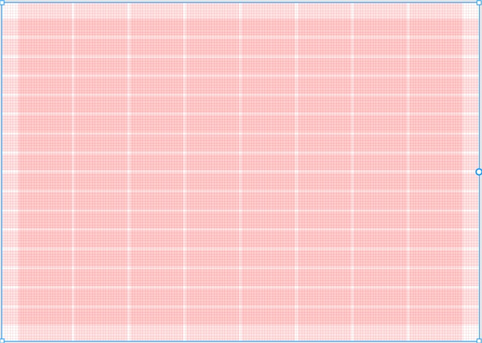

Retícula
Versión móvil
La retícula para la aplicación móvil está formada por 16 filas de 64 px cada una y 4 columnas. Además, para tener más control de espacios entre elementos tiene una cuadrícula de 8x8 px.
Versión desktop
La retícula para la versión desktop tiene una estructura similar a la anterior, pero el doble de columnas y márgenes más amplios, ya que el espacio disponible es mayor
